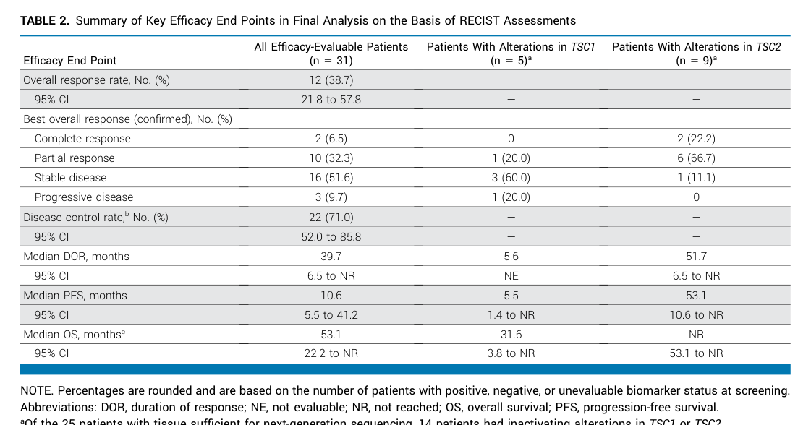

Perivascular epithelioid cell neoplasm (PEComa) is a family of mesenchymal tumors composed of distinctive perivascular epithelioid cells (PECs) that characteristically co-express melanocytic markers (HMB-45, Melan-A/MART-1) and smooth-muscle markers (smooth muscle actin, desmin). PECs have no clear normal-tissue counterpart. The PEComa family is unified by a shared mTOR-pathway biology: most PEComas arise from biallelic inactivation of the tuberous sclerosis genes TSC1 or TSC2, whose protein products form a GTPase- activating-protein complex for RHEB. Loss of TSC1/TSC2 function elevates RHEB-GTP and drives constitutive mechanistic target of rapamycin complex 1 (mTORC1) hyperactivation, promoting anabolic growth and cell proliferation. The family includes renal and hepatic angiomyolipoma (AML), pulmonary lymphangioleiomyomatosis (LAM), clear cell "sugar" tumor of the lung, and PEComas-not-otherwise-specified arising in soft tissue, uterus, and viscera. A molecularly and clinically distinct subset is driven by TFE3 (transcription factor binding to IGHM enhancer 3) gene fusions of the MiT/TFE family and is TSC-independent. PEComas occur sporadically and in association with the tuberous sclerosis complex (TSC) germline syndrome and may be benign or malignant. The shared mTORC1 dependence makes mTOR inhibitors (sirolimus, nab-sirolimus/ABI-009, everolimus) effective targeted therapies for many PEComas, including malignant PEComa and TSC-associated renal angiomyolipoma and lymphangioleiomyomatosis.
Ask a research question about Perivascular Epithelioid Cell Neoplasm. OpenScientist will conduct autonomous deep research using the Disorder Mechanisms Knowledge Base and PubMed literature (typically 10-30 minutes).
Do not include personal health information in your question. Questions and results are cached in your browser's local storage.
name: Perivascular Epithelioid Cell Neoplasm
creation_date: "2026-06-08T00:00:00Z"
description: >
Perivascular epithelioid cell neoplasm (PEComa) is a family of mesenchymal
tumors composed of distinctive perivascular epithelioid cells (PECs) that
characteristically co-express melanocytic markers (HMB-45, Melan-A/MART-1)
and smooth-muscle markers (smooth muscle actin, desmin). PECs have no clear
normal-tissue counterpart. The PEComa family is unified by a shared
mTOR-pathway biology: most PEComas arise from biallelic inactivation of the
tuberous sclerosis genes TSC1 or TSC2, whose protein products form a GTPase-
activating-protein complex for RHEB. Loss of TSC1/TSC2 function elevates
RHEB-GTP and drives constitutive mechanistic target of rapamycin complex 1
(mTORC1) hyperactivation, promoting anabolic growth and cell proliferation.
The family includes renal and hepatic angiomyolipoma (AML), pulmonary
lymphangioleiomyomatosis (LAM), clear cell "sugar" tumor of the lung, and
PEComas-not-otherwise-specified arising in soft tissue, uterus, and viscera.
A molecularly and clinically distinct subset is driven by TFE3 (transcription
factor binding to IGHM enhancer 3) gene fusions of the MiT/TFE family and is
TSC-independent. PEComas occur sporadically and in association with the
tuberous sclerosis complex (TSC) germline syndrome and may be benign or
malignant. The shared mTORC1 dependence makes mTOR inhibitors (sirolimus,
nab-sirolimus/ABI-009, everolimus) effective targeted therapies for many
PEComas, including malignant PEComa and TSC-associated renal angiomyolipoma
and lymphangioleiomyomatosis.
category: Complex
disease_term:
preferred_term: Perivascular Epithelioid Cell Neoplasm
term:
id: MONDO:0006359
label: neoplasm with perivascular epithelioid cell differentiation
parents:
- soft tissue neoplasm
- mTOR Pathway Disorder
has_subtypes:
- name: Angiomyolipoma
display_name: Angiomyolipoma (AML)
description: >
The most common PEComa, arising most often in the kidney and composed of a
variable admixture of dysmorphic blood vessels, smooth muscle, and adipose
tissue. Renal AML occurs sporadically and in tuberous sclerosis complex,
where lesions are frequently multiple and bilateral. Epithelioid AML is a
subtype with malignant potential.
- name: Lymphangioleiomyomatosis
display_name: Lymphangioleiomyomatosis (LAM)
description: >
A low-grade, destructive proliferation of LAM cells (perivascular
epithelioid cells) in the lung leading to diffuse cystic lung destruction.
Occurs sporadically and in tuberous sclerosis complex; affects almost
exclusively women, implicating estrogen signaling.
- name: Clear Cell Sugar Tumor
display_name: Clear cell "sugar" tumor of the lung
description: >
A rare, usually benign pulmonary PEComa composed of clear, glycogen-rich
(PAS-positive, "sugar") epithelioid cells with HMB-45 positivity.
- name: TFE3-rearranged PEComa
display_name: TFE3-rearranged PEComa
description: >
A molecularly distinct subset driven by TFE3 (MiT/TFE family) gene fusions
rather than TSC1/TSC2 loss. These tumors tend to occur in younger patients,
are not associated with tuberous sclerosis, show predominant alveolar
architecture and epithelioid cytology, are typically negative for
smooth-muscle markers, and show strong nuclear TFE3 expression.
- name: Malignant PEComa
display_name: Malignant PEComa
description: >
PEComa meeting criteria for malignancy (e.g., size > 5 cm, infiltrative
growth, high nuclear grade and cellularity, necrosis, mitotic activity > 1
per 50 high-power fields, and vascular invasion), capable of recurrence and
metastasis. Frequently responsive to mTOR inhibition.
pathophysiology:
- name: TSC1/TSC2 Biallelic Inactivation
description: >
Most PEComas arise from biallelic loss of function of the tumor-suppressor
genes TSC1 (hamartin) or TSC2 (tuberin). The TSC1/TSC2 complex acts as a
GTPase-activating protein for the small GTPase RHEB; its loss removes a
brake on mTORC1. Inactivation may be germline (in tuberous sclerosis
complex) or somatic (in sporadic PEComas).
cell_types:
- preferred_term: perivascular epithelioid cell
term:
id: CL:0000192
label: smooth muscle cell
downstream:
- target: mTORC1 Hyperactivation
description: Loss of TSC1/TSC2 GAP activity elevates RHEB-GTP and activates mTORC1.
evidence:
- reference: PMID:18184959
supports: SUPPORT
evidence_source: HUMAN_CLINICAL
snippet: "Angiomyolipomas in patients with the tuberous sclerosis complex or sporadic lymphangioleiomyomatosis are associated with mutations in tuberous sclerosis genes resulting in constitutive activation of the mammalian target of rapamycin (mTOR)."
explanation: >
Establishes that tuberous sclerosis gene mutations drive constitutive mTOR
activation in angiomyolipoma and lymphangioleiomyomatosis, two core members
of the PEComa family.
- name: mTORC1 Hyperactivation
description: >
Elevated RHEB-GTP drives constitutive activation of mTOR complex 1,
increasing protein synthesis, anabolic metabolism, cellular growth, and
lymphangiogenesis while suppressing autophagy. mTORC1 is the central,
therapeutically actionable node of the PEComa family.
biological_processes:
- preferred_term: positive regulation of TOR signaling
modifier: INCREASED
term:
id: GO:0032008
label: positive regulation of TOR signaling
downstream:
- target: Perivascular Epithelioid Cell Proliferation
description: mTORC1 hyperactivation drives PEC proliferation and tumor growth.
evidence:
- reference: PMID:21410393
supports: SUPPORT
evidence_source: HUMAN_CLINICAL
snippet: "it is associated with inappropriate activation of mammalian target of rapamycin (mTOR) signaling, which regulates cellular growth and lymphangiogenesis"
explanation: >
Describes inappropriate mTOR signaling regulating cellular growth and
lymphangiogenesis as the driver of lymphangioleiomyomatosis, a PEComa-family
tumor.
- name: Perivascular Epithelioid Cell Proliferation
description: >
Proliferation of perivascular epithelioid cells co-expressing melanocytic
(HMB-45, Melan-A) and smooth-muscle (SMA, desmin) markers, forming the
characteristic PEComa lesion. This immunophenotype defines the tumor family.
cell_types:
- preferred_term: perivascular epithelioid cell
term:
id: CL:0000192
label: smooth muscle cell
biological_processes:
- preferred_term: cell population proliferation
modifier: INCREASED
term:
id: GO:0008283
label: cell population proliferation
evidence:
- reference: PMID:16327428
supports: SUPPORT
evidence_source: HUMAN_CLINICAL
snippet: "PEComas, occasionally associated with the tuberous sclerosis complex, are defined by the presence of perivascular epithelioid cells that coexpress muscle and melanocytic markers."
explanation: >
Defines the PEComa family by the proliferation of perivascular epithelioid
cells that co-express muscle and melanocytic markers.
- name: TFE3 Fusion-Driven Transcription
description: >
A TSC-independent subset is driven by MiT/TFE family TFE3 gene fusions that
produce a constitutively active TFE3 transcription factor and strong nuclear
TFE3 expression, driving an oncogenic transcriptional program. These tumors
show minimal muscle-marker immunoreactivity and are not associated with
tuberous sclerosis.
cell_types:
- preferred_term: perivascular epithelioid cell
term:
id: CL:0000192
label: smooth muscle cell
gene_products:
- preferred_term: TFE3 transcription factor
term:
id: NCIT:C30094
label: Transcription Factor E3
downstream:
- target: Perivascular Epithelioid Cell Proliferation
description: TFE3 fusion oncogene drives PEC proliferation through a TSC-independent transcriptional program.
evidence:
- reference: PMID:20871214
supports: SUPPORT
evidence_source: HUMAN_CLINICAL
snippet: "a subset of lesions currently classified as PEComas harbors TFE3 gene fusions"
explanation: >
Demonstrates that a distinctive subset of PEComas is driven by TFE3 gene
fusions, defining the TFE3-rearranged subtype.
- reference: PMID:20871214
supports: SUPPORT
evidence_source: HUMAN_CLINICAL
snippet: "distinctive features of these cases include a tendency to young age, the absence of association with tuberous sclerosis, predominant alveolar architecture and epithelioid cytology, minimal immunoreactivity for muscle markers, and strong (3+) TFE3 immunoreactivity"
explanation: >
Characterizes the TFE3-rearranged subset as TSC-independent with alveolar
architecture, minimal muscle-marker expression, and strong TFE3 staining.
phenotypes:
- name: Renal Angiomyolipoma
category: Neoplasm
subtype: Angiomyolipoma
description: Benign fat-, vessel-, and smooth-muscle-containing renal PEComa, often multiple and bilateral in tuberous sclerosis complex.
phenotype_term:
preferred_term: Renal angiomyolipoma
term:
id: HP:0006772
label: Renal angiomyolipoma
evidence:
- reference: PMID:18184959
supports: SUPPORT
evidence_source: HUMAN_CLINICAL
snippet: "Angiomyolipomas in patients with the tuberous sclerosis complex or sporadic lymphangioleiomyomatosis"
explanation: Renal angiomyolipoma is the most common PEComa and a defining manifestation in tuberous sclerosis complex.
- name: Liver Angiomyolipoma
category: Neoplasm
subtype: Angiomyolipoma
description: Hepatic PEComa with the same fat-, vessel-, and smooth-muscle composition as renal angiomyolipoma; can be confused with hepatocellular carcinoma.
phenotype_term:
preferred_term: Liver angiomyolipoma
term:
id: HP:0034832
label: Liver angiomyolipoma
- name: Pulmonary Cysts
category: Respiratory
subtype: Lymphangioleiomyomatosis
description: Diffuse cystic lung destruction characteristic of lymphangioleiomyomatosis.
phenotype_term:
preferred_term: Pulmonary cyst
term:
id: HP:0032445
label: Pulmonary cyst
evidence:
- reference: PMID:21410393
supports: SUPPORT
evidence_source: HUMAN_CLINICAL
snippet: "Lymphangioleiomyomatosis (LAM) is a progressive, cystic lung disease in women"
explanation: Progressive cystic lung destruction is the defining pulmonary phenotype of LAM, a PEComa-family tumor.
- name: Pneumothorax
category: Respiratory
subtype: Lymphangioleiomyomatosis
description: Spontaneous pneumothorax from rupture of subpleural cysts is a common presenting complication of lymphangioleiomyomatosis.
phenotype_term:
preferred_term: Pneumothorax
term:
id: HP:0002107
label: Pneumothorax
- name: Chylothorax
category: Respiratory
subtype: Lymphangioleiomyomatosis
description: Chylous pleural effusion from lymphatic obstruction/disruption in lymphangioleiomyomatosis.
phenotype_term:
preferred_term: Chylothorax
term:
id: HP:0010310
label: Chylothorax
- name: Abdominal Mass
category: Neoplasm
description: Soft-tissue and visceral PEComas may present as a palpable abdominal or pelvic mass.
phenotype_term:
preferred_term: Abdominal mass
term:
id: HP:0031500
label: Abdominal mass
histopathology:
- name: Epithelioid Differentiation
finding_term:
preferred_term: epithelioid differentiation
term:
id: NCIT:C35938
label: Epithelioid Differentiation
diagnostic: true
description: >
Epithelioid perivascular cells with clear-to-granular eosinophilic cytoplasm
arranged around blood vessels; in clear cell sugar tumor the cytoplasm is
glycogen-rich and PAS-positive.
evidence:
- reference: PMID:28556973
reference_title: "Primary cutaneous perivascular epithelioid cell tumor (PEComa): Five new cases and review of the literature."
supports: SUPPORT
evidence_source: HUMAN_CLINICAL
snippet: "epithelioid cells with pale, clear, or granular pink cytoplasm arranged in nests"
explanation: >-
Documents the hallmark epithelioid PEComa cells with pale/clear-to-granular
cytoplasm, supporting epithelioid differentiation as a defining morphology.
- name: Spindle Cell Pattern
finding_term:
preferred_term: Spindle Cell Pattern
term:
id: NCIT:C53643
label: Spindle Cell Pattern
description: >
A subset of PEComas (and the smooth-muscle component of angiomyolipoma) show
spindled morphology in addition to or instead of epithelioid cells.
evidence:
- reference: PMID:16327428
reference_title: "Perivascular epithelioid cell neoplasms of soft tissue and gynecologic origin: a clinicopathologic study of 26 cases and review of the literature."
supports: SUPPORT
evidence_source: HUMAN_CLINICAL
snippet: "epithelioid (N = 9), spindled (N = 7), or mixed (N = 10)."
explanation: >-
In the Folpe series, 7 of 26 PEComas were purely spindled and 10 were
mixed, documenting the spindle-cell morphologic component.
- name: Alveolar Pattern
finding_term:
preferred_term: alveolar/nested architecture
term:
id: NCIT:C35917
label: Alveolar Pattern
description: >
Predominant alveolar/nested architecture is characteristic of the
TFE3-rearranged subset of PEComas.
evidence:
- reference: PMID:29626599
reference_title: "Expanding the histomorphologic spectrum of TFE3-rearranged perivascular epithelioid cell tumors."
supports: SUPPORT
evidence_source: HUMAN_CLINICAL
snippet: "alveolar morphology that lacks spindle cells and smooth muscle differentiation."
explanation: >-
Confirms the distinct alveolar architecture characteristic of the
TFE3-rearranged PEComa subset.
- name: Perivascular Epithelioid Cell Arrangement
finding_term:
preferred_term: perivascular arrangement of epithelioid cells
term:
id: NCIT:C41839
label: Perivascular Arrangement of Tumor Cells
diagnostic: true
description: >
Tumor cells composed of perivascular epithelioid cells distributed around
blood vessels — the defining architectural feature of the PEComa family,
typically co-expressing melanocytic and smooth-muscle markers.
evidence:
- reference: PMID:28372349
reference_title: "Perivascular Epithelioid Cell Tumor in the Stomach."
supports: SUPPORT
evidence_source: HUMAN_CLINICAL
snippet: "both tumors were composed of perivascular epithelioid cells that were"
explanation: >-
Confirms the tumor is composed of perivascular epithelioid cells (with
melanocytic and smooth-muscle immunoreactivity), the perivascular
arrangement that names the entity.
biochemical:
- name: Melanocytic Marker Co-expression
biomarker_term:
preferred_term: Melan-A
term:
id: NCIT:C17878
label: Melan-A
notes: >
PEComas co-express melanocytic markers (HMB-45, Melan-A/MART-1, MiTF)
alongside smooth-muscle markers; this dual immunophenotype is the defining
diagnostic feature of the tumor family. HMB-45 is the most sensitive marker
(positive in 22/24 cases in the Folpe series).
evidence:
- reference: PMID:16327428
supports: SUPPORT
evidence_source: HUMAN_CLINICAL
snippet: "HMB45 (22/24)"
explanation: HMB-45 was positive in 22 of 24 PEComas in the Folpe series, making it the most sensitive diagnostic marker.
genetic:
- name: TSC2 Inactivation
gene_term:
preferred_term: TSC2
term:
id: hgnc:12363
label: TSC2
association: Biallelic Inactivating Mutations
variant_origin: SOMATIC
notes: >
Biallelic loss of TSC2 (tuberin) is the most frequent molecular event in
PEComas. TSC2 status also predicts response to mTOR inhibition: in the AMPECT
trial, patients with a TSC2 mutation had a markedly higher response rate to
nab-sirolimus.
evidence:
- reference: PMID:34637337
supports: SUPPORT
evidence_source: HUMAN_CLINICAL
snippet: "8 of 9 (89%) patients with a TSC2 mutation achieved a confirmed response versus 2 of 16 (13%) without TSC2 mutation"
explanation: >
TSC2 mutation status strongly predicts response to mTOR inhibition in
malignant PEComa, confirming TSC2 loss as a central driver.
- name: TSC1 Inactivation
gene_term:
preferred_term: TSC1
term:
id: hgnc:12362
label: TSC1
association: Biallelic Inactivating Mutations
variant_origin: SOMATIC
notes: >
Biallelic loss of TSC1 (hamartin) is a less common but established driver of
PEComas, producing the same mTORC1 hyperactivation as TSC2 loss.
evidence:
- reference: PMID:18184959
supports: SUPPORT
evidence_source: HUMAN_CLINICAL
snippet: "associated with mutations in tuberous sclerosis genes resulting in constitutive activation of the mammalian target of rapamycin (mTOR)"
explanation: >
The tuberous sclerosis genes encompass both TSC1 and TSC2; mutations in
either drive the constitutive mTOR activation underlying PEComas such as
angiomyolipoma.
- name: TFE3 Gene Fusion
gene_term:
preferred_term: TFE3
term:
id: hgnc:11752
label: TFE3
association: MiT/TFE Family Gene Fusion
variant_origin: SOMATIC
notes: >
A distinctive TSC-independent subset of PEComas harbors MiT/TFE family TFE3
gene fusions detectable by FISH break-apart assay, with strong nuclear TFE3
immunoreactivity.
evidence:
- reference: PMID:20871214
supports: SUPPORT
evidence_source: HUMAN_CLINICAL
snippet: "Four nonrenal PEComas (mean patient age 24 y) showed TFE3 gene rearrangements by FISH, and all 4 of these showed strong positive (3+) TFE3 immunoreactivity"
explanation: >
Documents TFE3 gene rearrangements detected by FISH in a subset of PEComas,
correlating with strong TFE3 immunoreactivity.
treatments:
- name: Sirolimus
description: >
mTOR inhibitor (rapamycin) that suppresses constitutive mTORC1 activation in
PEComas. Reduces angiomyolipoma volume in tuberous sclerosis complex and
sporadic lymphangioleiomyomatosis and stabilizes lung function in LAM.
therapeutic_modality: SMALL_MOLECULE
treatment_term:
preferred_term: Pharmacotherapy
term:
id: NCIT:C15986
label: Pharmacotherapy
therapeutic_agent:
- preferred_term: sirolimus
term:
id: CHEBI:9168
label: sirolimus
evidence:
- reference: PMID:18184959
supports: SUPPORT
evidence_source: HUMAN_CLINICAL
snippet: "The mean (+/-SD) angiomyolipoma volume at 12 months was 53.2+/-26.6% of the baseline value (P<0.001)"
explanation: Sirolimus reduced angiomyolipoma volume by nearly half at 12 months in TSC/LAM patients.
- reference: PMID:21410393
supports: SUPPORT
evidence_source: HUMAN_CLINICAL
snippet: "In patients with LAM, sirolimus stabilized lung function, reduced serum VEGF-D levels, and was associated with a reduction in symptoms and improvement in quality of life."
explanation: The randomized MILES trial established sirolimus as stabilizing lung function in LAM.
- name: Nab-Sirolimus
description: >
Albumin-bound nanoparticle formulation of sirolimus (ABI-009). In the
AMPECT phase II registration trial it produced durable responses in
malignant PEComa and is an approved treatment option, with the highest
response among TSC2-mutant tumors.
therapeutic_modality: SMALL_MOLECULE
treatment_term:
preferred_term: Pharmacotherapy
term:
id: NCIT:C15986
label: Pharmacotherapy
therapeutic_agent:
- preferred_term: sirolimus albumin-bound nanoparticles
term:
id: NCIT:C74065
label: Sirolimus Albumin-bound Nanoparticles
evidence:
- reference: PMID:34637337
supports: SUPPORT
evidence_source: HUMAN_CLINICAL
snippet: "The overall response rate was 39% (12 of 31; 95% CI, 22 to 58) with one complete and 11 partial responses"
explanation: The AMPECT phase II trial demonstrated a 39% objective response rate to nab-sirolimus in malignant PEComa.
- reference: PMID:34637337
supports: SUPPORT
evidence_source: HUMAN_CLINICAL
snippet: "nab-Sirolimus is active in patients with malignant PEComa."
explanation: The trial concluded nab-sirolimus is an active treatment for malignant PEComa.
- name: Surgical Resection
description: >
Complete surgical excision is the primary treatment for localized PEComas,
including angiomyolipoma at risk of hemorrhage and resectable soft-tissue
PEComas.
treatment_term:
preferred_term: surgical procedure
term:
id: MAXO:0000004
label: surgical procedure
clinical_trials:
- name: NCT02494570
phase: PHASE_II
status: COMPLETED
description: >
AMPECT — single-arm phase II registration trial of nab-sirolimus (ABI-009)
in patients with advanced malignant PEComa.
target_phenotypes:
- preferred_term: Abdominal mass
term:
id: HP:0031500
label: Abdominal mass
evidence:
- reference: PMID:34637337
supports: SUPPORT
evidence_source: HUMAN_CLINICAL
snippet: "this phase II, single-arm, registration trial is the first prospective clinical trial in this disease, investigating the safety and efficacy of the mammalian target of rapamycin inhibitor nab-sirolimus (AMPECT, NCT02494570)"
explanation: AMPECT was the first prospective clinical trial in malignant PEComa, testing nab-sirolimus.
Perivascular epithelioid cell tumors (PEComas) are rare mesenchymal neoplasms composed of distinctive perivascular epithelioid cells with characteristic dual immunophenotype (melanocytic and smooth-muscle markers) and a spectrum of behavior from benign to malignant. (testa2023systemictreatmentsand pages 1-2, amante2024hepaticperivascularepithelioid pages 1-2)
A commonly cited WHO-style definition (as quoted in a 2024 clinicopathology editorial) is: “a mesenchymal tumor which shows a local association with vessel walls and usually expresses melanocyte and smooth muscle markers.” (amante2024hepaticperivascularepithelioid pages 1-2)
Commonly used names in the clinical and pathology literature include: - PEComa - Perivascular epithelioid cell tumor - Perivascular epithelioid cell neoplasm - PEComa-NOS (not otherwise specified)
The PEComa “family” includes related entities often discussed together, such as angiomyolipoma (AML), lymphangioleiomyomatosis (LAM), and pulmonary clear cell “sugar” tumor. (amante2024hepaticperivascularepithelioid pages 1-2, ji2024hepaticperivascularepithelioid pages 1-2)
The information summarized here is derived from: - Aggregated disease-level resources (systematic reviews, narrative reviews, WHO-referenced definitions). (amante2024hepaticperivascularepithelioid pages 1-2, dong2024comprehensiveinsightsinto pages 1-2, levin2024gynecologicperivascularepithelioid pages 1-3) - Human clinical evidence (prospective phase II trial; retrospective cohort/series). (wagner2021nabsirolimusforpatients pages 1-2, ji2024hepaticperivascularepithelioid pages 1-2, testa2023systemictreatmentsand pages 1-2)
PEComas are primarily driven by molecular alterations affecting the mTOR pathway, most classically through loss-of-function of TSC1 or TSC2, and by a biologically distinct subset with TFE3 gene fusions. (wagner2021nabsirolimusforpatients pages 1-2, nikolova2026pecomasrevisitedmtordriven pages 2-4, dong2024comprehensiveinsightsinto pages 1-2)
Abstract-supported mechanistic statement (direct quote): a 2025 case report reviewing core biology states PEComas are “molecularly characterized by TSC2 inactivation driving mammalian target of rapamycin (mTOR) pathway activation.” (nikolova2026pecomasrevisitedmtordriven pages 1-2)
Genetic risk factors / predisposition: - Association with tuberous sclerosis complex (TSC) is a recognized context for PEComa-family tumors, reflecting germline TSC1/TSC2 pathway dysfunction; however, most PEComa patients do not have clinical TSC in summarized reviews. (dong2024comprehensiveinsightsinto pages 1-2)
Demographic factors: - Female sex is a consistent epidemiologic feature across anatomic sites. (wagner2021nabsirolimusforpatients pages 1-2, dong2024comprehensiveinsightsinto pages 1-2)
Environmental/infectious risk factors: - No specific environmental or infectious causal factors were identified in the retrieved evidence.
No validated protective genetic or environmental factors were identified in the retrieved evidence.
No gene–environment interaction evidence was identified in the retrieved evidence.
Phenotype depends strongly on organ site; across sites, PEComas often present as an incidental mass lesion or with nonspecific symptoms. In a 2024 hepatic PEComa cohort (n=36), 72.2% (26/36) were diagnosed incidentally with non-specific symptoms. (ji2024hepaticperivascularepithelioid pages 1-2)
Direct quote: “The diagnosis of a PEComa is based on its pathological features” with characteristic epithelioid forms and perivascular association. (amante2024hepaticperivascularepithelioid pages 1-2)
Key histologic patterns include epithelioid to spindle cells with clear to eosinophilic cytoplasm, sometimes arranged around thick-walled vessels. (amante2024hepaticperivascularepithelioid pages 1-2, dong2024comprehensiveinsightsinto pages 1-2)
Common IHC features: - Melanocytic markers: HMB45, Melan-A, often MiTF (variable by site). (amante2024hepaticperivascularepithelioid pages 1-2, ji2024hepaticperivascularepithelioid pages 1-2) - Myoid markers: SMA, ± desmin, caldesmon. (amante2024hepaticperivascularepithelioid pages 1-2, ji2024hepaticperivascularepithelioid pages 1-2)
Example quantitative IHC data from hepatic PEComa (2024, n=36): HMB-45 97.2% (35/36), Melan-A 97.1% (34/35), SMA 88.5% (23/26), CD34 86.7% (26/30). (ji2024hepaticperivascularepithelioid pages 1-2)
Because PEComa is a tumor entity spanning sites, HPO terms are best captured at the level of mass lesions and site-specific symptoms. Suggested high-level HPO terms: - Neoplasm (HP:0002664) - Abdominal mass (HP:0001541) (for retroperitoneal/hepatic/pelvic presentations) - Abnormality of the uterus (HP:0000130) (for uterine PEComa) - Pulmonary nodules (HP:0025179) / Metastatic neoplasm (HP:0033109) (when metastatic)
Frequency and severity are highly site- and subtype-dependent; robust cross-site phenotype frequencies were not available in the retrieved texts.
No disease-specific QoL instrument outcomes (e.g., EQ-5D/SF-36) were identified in the retrieved evidence.
Two clinically meaningful molecular groupings recur in contemporary reviews and clinical trial biomarker analyses:
1) mTOR-pathway–altered PEComa - Typically via TSC1/TSC2 inactivation and sometimes MTOR mutations, producing constitutive mTORC1 signaling. (wagner2021nabsirolimusforpatients pages 1-2, dong2024comprehensiveinsightsinto pages 1-2) - A 2024 renal-focused review summarizes that “mutations in TSC1/TSC2 disrupt the TSC, leading to unchecked cell proliferation due to deregulation of the mTOR pathway.” (dong2024comprehensiveinsightsinto pages 1-2) - The same review reports approximate alteration frequencies: “close to 70% show TSC2 mutations and 20% exhibit TSC1 mutations.” (dong2024comprehensiveinsightsinto pages 1-2)
2) TFE3-rearranged PEComa - Defined by TFE3 gene fusions and strong TFE3 expression; may show distinct clinicopathologic features and potentially different therapy sensitivity. (nikolova2026pecomasrevisitedmtordriven pages 2-4, amante2024hepaticperivascularepithelioid pages 1-2)
Additional genes mentioned as potentially involved (context-dependent, not necessarily causal across all PEComa): TP53, and rare mentions of FLCN truncating mutations in WHO-referenced discussion. (amante2024hepaticperivascularepithelioid pages 1-2, dong2024comprehensiveinsightsinto pages 1-2)
The dominant actionable alterations described in the retrieved PEComa evidence are somatic TSC1/TSC2 alterations in malignant PEComa cohorts and trials (tumor profiling), with germline TSC1/TSC2 variants relevant in the context of tuberous sclerosis complex. (wagner2021nabsirolimusforpatients pages 1-2, dong2024comprehensiveinsightsinto pages 1-2)
Example trial biomarker result: in AMPECT tumor mutation profiling, 8/9 (89%) patients with a TSC2 mutation achieved a confirmed response to nab-sirolimus vs 2/16 (13%) without TSC2 mutation. (wagner2021nabsirolimusforpatients pages 1-2)
Population allele frequencies and ClinVar/ACMG classifications were not available in the retrieved evidence.
No validated modifier genes or epigenetic signatures were identified in the retrieved evidence. TFE3 rearrangements are the primary structural alteration discussed. (nikolova2026pecomasrevisitedmtordriven pages 2-4)
No specific toxins, lifestyle, or infectious triggers were identified in the retrieved evidence as contributing environmental factors for PEComa.
mTORC1 activation via TSC1/TSC2 loss is the central mechanistic axis for a major PEComa subset. - In malignant PEComa, the AMPECT trial background states PEComas commonly harbor TSC1/TSC2 loss-of-function and show evidence of mTORC1 activation, including phosphorylation of p70S6K and ribosomal protein S6 by IHC. (wagner2021nabsirolimusforpatients pages 1-2)
Causal chain (mTOR-driven subtype): 1. TSC1/TSC2 inactivation → disruption of hamartin–tuberin tumor-suppressor complex. (dong2024comprehensiveinsightsinto pages 1-2) 2. Loss of inhibition of mTORC1 signaling → increased downstream phosphorylation (e.g., S6K/S6) and growth/proliferation programs. (wagner2021nabsirolimusforpatients pages 1-2, dong2024comprehensiveinsightsinto pages 1-2) 3. Clinical phenotype: tumor growth across multiple anatomical sites; in advanced disease, metastatic spread. (wagner2021nabsirolimusforpatients pages 1-2)
TFE3-rearranged subtype: A gynecologic PEComa review describes a TFE3-associated subtype with “heightened transcriptional activity of TFE3,” and notes downstream pro-oncogenic pathway activation (including “c-Met, AKT, and mTOR”). (levin2024gynecologicperivascularepithelioid pages 5-6)
The neoplastic “perivascular epithelioid cell” has no universally agreed normal counterpart. Reviews state PEComas have “no known normal counterpart.” (nikolova2026pecomasrevisitedmtordriven pages 1-2) - Suggested CL mapping is therefore uncertain; as a pragmatic knowledge-base approach, represent the tumor cell as a mesenchymal neoplastic cell (custom/local class) with smooth muscle-like and melanocytic marker expression.
No PEComa-specific multi-omics datasets were identified in the retrieved evidence.
PEComas can arise in many organs; commonly cited visceral sites include kidney, uterus, gastrointestinal tract, and others (liver, lung, retroperitoneum). (wagner2021nabsirolimusforpatients pages 1-2, dong2024comprehensiveinsightsinto pages 1-2)
Suggested UBERON terms (examples): - Kidney (UBERON:0002113) - Uterus (UBERON:0000995) - Liver (UBERON:0002107) - Lung (UBERON:0002048) - Retroperitoneal space (UBERON:0003684)
No specific subcellular compartment abnormalities were described in the retrieved evidence.
PEComas occur predominantly in adults, with some subsets (e.g., TFE3-rearranged) suggested to occur in younger patients in review discussions; detailed age-of-onset distributions were not comprehensively retrievable. (nikolova2026pecomasrevisitedmtordriven pages 2-4)
Clinical behavior ranges from indolent to aggressive metastatic malignancy. (wagner2021nabsirolimusforpatients pages 1-2, amante2024hepaticperivascularepithelioid pages 1-2)
Malignant PEComa is ultra-rare; an estimated annual incidence of ~1 per 1,000,000 is cited in trial and retrospective-series contexts. (wagner2021nabsirolimusforpatients pages 1-2, testa2023systemictreatmentsand pages 1-2)
Female predominance is consistent across multiple sources. - A 2024 review reports female:male ratio outside sex-linked organs as ~1.6- to 5-fold higher in females. (dong2024comprehensiveinsightsinto pages 1-2) - Hepatic series: 29 female / 7 male; median age 47.8 years. (ji2024hepaticperivascularepithelioid pages 1-2)
PEComa as a tumor diagnosis is not typically described as a Mendelian inherited disease; however, tuberous sclerosis complex (autosomal dominant TSC1/TSC2) predisposes to PEComa-family tumors in some individuals. (dong2024comprehensiveinsightsinto pages 1-2)
Penetrance/expressivity/carrier frequency/founder effects were not retrievable for PEComa specifically from the current evidence.
Imaging can be non-specific, and diagnostic accuracy may be low. - In hepatic PEComa, only 19.4% (7/36) were correctly diagnosed by imaging; vascular enhancement was frequent (75%, 27/36). (ji2024hepaticperivascularepithelioid pages 1-2)
Pathologic diagnosis is central. - Direct quote: “The diagnosis of a PEComa is based on its pathological features.” (amante2024hepaticperivascularepithelioid pages 1-2)
Key immunohistochemistry: - Direct quote: lesions are “typically … positive for HMB45, Melan-A, and smooth muscle actin (SMA) in decreasing order,” with advice to “evaluate immunoreactivity for TFE3.” (amante2024hepaticperivascularepithelioid pages 1-2)
Molecular profiling is increasingly relevant for subtype assignment and therapy selection. - AMPECT included tumor mutation profiling and demonstrated strong association of TSC2 mutation with response to nab-sirolimus. (wagner2021nabsirolimusforpatients pages 1-2)
Not comprehensively extractable from the retrieved evidence; in practice, differentials are site-specific and include smooth muscle tumors and melanocytic tumors, among others (not detailed quantitatively in retrieved sources).
PEComa prognosis varies widely by site, resectability, and malignant risk features.
Risk stratification (Folpe-type criteria): A commonly used framework (endorsed in 2024 discussion) is Folpe’s criteria to categorize PEComa as benign, malignant, or uncertain malignant potential. (amante2024hepaticperivascularepithelioid pages 1-2)
A review excerpt summarizes Folpe features (used in practice): tumor size >5 cm; infiltrative growth; high nuclear grade/cellularity; mitotic activity >1/50 HPF; necrosis; vascular invasion; and tumors with ≥2 features are often considered malignant. (nikolova2026pecomasrevisitedmtordriven pages 1-2)
Biomarker-associated prognosis: In a 2023 advanced PEComa retrospective analysis (n=29), TFE3 overexpression correlated with higher risk of death (HR 11.8, P=0.04) and shorter median overall survival. (testa2023systemictreatmentsand pages 1-2)
Surgical resection is the cornerstone for localized disease; organ-specific alternatives (e.g., ablation, TACE) may be used when surgery is contraindicated. - Hepatic PEComa management distribution: resection 67.7% (24/36), radiofrequency ablation 16.7% (6/36), TACE 2.7% (1/36). (ji2024hepaticperivascularepithelioid pages 1-2)
Suggested MAXO terms (examples): - Surgical excision (MAXO:0001067) (term label may vary by ontology release) - Tumor ablation therapy (MAXO:0000756) - Transarterial chemoembolization (MAXO:0000936)
nab-sirolimus is described as approved in the US for metastatic or locally advanced malignant PEComa based on AMPECT trial results. (wagner2024phaseiitrial media 6536d2a4)
Primary report (JCO 2021): - ORR 39% (12/31; 95% CI 22–58) with 1 CR and 11 PR; stable disease 52%; progressive disease 10%. (wagner2021nabsirolimusforpatients pages 1-2) - Median PFS 10.6 months; median OS 40.8 months; median DOR not reached at primary analysis; responses rapid (67% by week 6) and durable. (wagner2021nabsirolimusforpatients pages 1-2) - Biomarker effect: 8/9 (89%) with TSC2 mutation responded vs 2/16 (13%) without (P<.001). (wagner2021nabsirolimusforpatients pages 1-2)
Long-term update (JCO 2024; data cutoff April 29, 2022): - Confirmed ORR 38.7%; median DOR 39.7 months; median PFS 10.6 months; median OS 53.1 months. (wagner2024phaseiitrial media 6536d2a4) - Most common TRAEs: stomatitis 82.4%, fatigue 61.8%, rash 61.8%; no grade ≥4 TRAEs. (wagner2024phaseiitrial media 6536d2a4)
Real-world implementation notes: The 2023 retrospective series emphasizes that nab-sirolimus is the only FDA-approved therapy for advanced malignant PEComa and that mTOR inhibitors are often preferred when possible due to chemotherapy morbidity and similar observed efficacy in retrospective comparisons. (testa2023systemictreatmentsand pages 1-2)
Image evidence: The 2024 JCO update includes Table 2 (efficacy outcomes) and Figure 1 (response waterfall/spider plots) supporting the above quantitative outcomes. (wagner2024phaseiitrial media 6536d2a4, wagner2024phaseiitrial media c9372bd3)
Multiple reviews and retrospective analyses indicate clinical activity of mTOR inhibitors in PEComa, consistent with mTOR pathway dependence in TSC-altered tumors. (testa2023systemictreatmentsand pages 1-2, dong2024comprehensiveinsightsinto pages 1-2)
Evidence in the retrieved corpus is insufficient to summarize PEComa-specific immunotherapy efficacy beyond general mention in retrospective comparisons; robust response-rate data were not available. (testa2023systemictreatmentsand pages 1-2)
No primary prevention strategies are established for sporadic PEComa given its ultra-rare incidence. In the context of tuberous sclerosis complex, surveillance for TSC-associated tumors is clinically relevant, but PEComa-specific preventive guidelines were not retrievable from the current evidence. (dong2024comprehensiveinsightsinto pages 1-2)
No naturally occurring PEComa disease burden in non-human species was identified in the retrieved evidence.
No PEComa-specific engineered animal models were identified in the retrieved evidence. Mechanistic studies of TSC1/TSC2 and mTOR biology exist broadly (oncology and TSC field), but explicit PEComa model organism details were not retrievable here. (dong2024comprehensiveinsightsinto pages 1-2)
(Records summarized are limited to information present in retrieved ClinicalTrials.gov chunks.)
Other PEComa-related trials were retrieved as metadata but not sufficiently detailed in the accessible text chunks to summarize endpoints accurately.
References
(amante2024hepaticperivascularepithelioid pages 1-2): Marcelo Fabián Amante. Hepatic perivascular epithelioid cell tumors: benign, malignant, and uncertain malignant potential. World Journal of Gastroenterology, 30:2374-2378, May 2024. URL: https://doi.org/10.3748/wjg.v30.i18.2374, doi:10.3748/wjg.v30.i18.2374. This article has 18 citations.
(wagner2021nabsirolimusforpatients pages 1-2): Andrew J. Wagner, Vinod Ravi, Richard F. Riedel, Kristen Ganjoo, Brian A. Van Tine, Rashmi Chugh, Lee Cranmer, Erlinda M. Gordon, Jason L. Hornick, Heng Du, Berta Grigorian, Anita N. Schmid, Shihe Hou, Katherine Harris, David J. Kwiatkowski, Neil P. Desai, and Mark A. Dickson. nab-sirolimus for patients with malignant perivascular epithelioid cell tumors. Journal of Clinical Oncology, 39:3660-3670, Nov 2021. URL: https://doi.org/10.1200/jco.21.01728, doi:10.1200/jco.21.01728. This article has 181 citations and is from a highest quality peer-reviewed journal.
(testa2023systemictreatmentsand pages 1-2): Stefano Testa, Nam Q. Bui, and Kristen N. Ganjoo. Systemic treatments and molecular biomarkers for perivascular epithelioid cell tumors: a single-institution retrospective analysis. Cancer Research Communications, 3:1212-1223, Jul 2023. URL: https://doi.org/10.1158/2767-9764.crc-23-0139, doi:10.1158/2767-9764.crc-23-0139. This article has 18 citations and is from a peer-reviewed journal.
(dong2024comprehensiveinsightsinto pages 1-2): Bao Nan Dong, Hui Zhan, Ting Luan, and Jian Song Wang. Comprehensive insights into renal perivascular epithelioid cell neoplasms: from molecular mechanisms to clinical practice. World Journal of Oncology, 15:372-381, Jun 2024. URL: https://doi.org/10.14740/wjon1794, doi:10.14740/wjon1794. This article has 10 citations.
(nikolova2026pecomasrevisitedmtordriven pages 2-4): D Nikolova, B Terzyiski, and S Slavov. Pecomas revisited: mtor-driven and tfe3-rearranged tumors as distinct biological entities. Unknown journal, 2026.
(cohen2022cutaneousperivascularepithelioid pages 1-25): Philip R Cohen, Shumei M Kato, Christof P Erickson, Antoanella Calame, and Razelle Kurzrock. Cutaneous perivascular epithelioid cell tumor (pecoma): case report and world literature review of clinical and molecular characteristics. Dermatology Online Journal, Apr 2022. URL: https://doi.org/10.5070/d328157058, doi:10.5070/d328157058. This article has 13 citations and is from a peer-reviewed journal.
(nikolova2026pecomasrevisitedmtordriven pages 1-2): D Nikolova, B Terzyiski, and S Slavov. Pecomas revisited: mtor-driven and tfe3-rearranged tumors as distinct biological entities. Unknown journal, 2026.
(wagner2024phaseiitrial media 6536d2a4): Andrew J. Wagner, Vinod Ravi, Richard F. Riedel, Kristen Ganjoo, Brian A. Van Tine, Rashmi Chugh, Lee Cranmer, Erlinda M. Gordon, Jason L. Hornick, Heng Du, Li Ding, Anita N. Schmid, Willis H. Navarro, David J. Kwiatkowski, and Mark A. Dickson. Phase ii trial of nab-sirolimus in patients with advanced malignant perivascular epithelioid cell tumors (ampect): long-term efficacy and safety update. May 2024. URL: https://doi.org/10.1200/jco.23.02266, doi:10.1200/jco.23.02266. This article has 51 citations and is from a highest quality peer-reviewed journal.
(wagner2024phaseiitrial media c9372bd3): Andrew J. Wagner, Vinod Ravi, Richard F. Riedel, Kristen Ganjoo, Brian A. Van Tine, Rashmi Chugh, Lee Cranmer, Erlinda M. Gordon, Jason L. Hornick, Heng Du, Li Ding, Anita N. Schmid, Willis H. Navarro, David J. Kwiatkowski, and Mark A. Dickson. Phase ii trial of nab-sirolimus in patients with advanced malignant perivascular epithelioid cell tumors (ampect): long-term efficacy and safety update. May 2024. URL: https://doi.org/10.1200/jco.23.02266, doi:10.1200/jco.23.02266. This article has 51 citations and is from a highest quality peer-reviewed journal.
(ji2024hepaticperivascularepithelioid pages 1-2): Min Ji, Yuchen Zhang, Shuaibing Liu, Menghui Zhang, and Bingbing Qiao. Hepatic perivascular epithelioid cell tumor: a retrospective analysis of 36 cases. Frontiers in Oncology, Aug 2024. URL: https://doi.org/10.3389/fonc.2024.1416254, doi:10.3389/fonc.2024.1416254. This article has 9 citations.
(levin2024gynecologicperivascularepithelioid pages 1-3): Gabriel Levin, Mariana Pilon Capella, Raanan Meyer, Yoav Brezinov, and Walter H Gotlieb. Gynecologic perivascular epithelioid cell tumors (pecomas): a review of recent evidence. Archives of Gynecology and Obstetrics, 309:2381-2386, Apr 2024. URL: https://doi.org/10.1007/s00404-024-07510-5, doi:10.1007/s00404-024-07510-5. This article has 17 citations and is from a peer-reviewed journal.
(levin2024gynecologicperivascularepithelioid pages 5-6): Gabriel Levin, Mariana Pilon Capella, Raanan Meyer, Yoav Brezinov, and Walter H Gotlieb. Gynecologic perivascular epithelioid cell tumors (pecomas): a review of recent evidence. Archives of Gynecology and Obstetrics, 309:2381-2386, Apr 2024. URL: https://doi.org/10.1007/s00404-024-07510-5, doi:10.1007/s00404-024-07510-5. This article has 17 citations and is from a peer-reviewed journal.
(NCT02494570 chunk 2): A Phase 2 Study of Nab-sirolimus (ABI-009) in Patients With Advanced Malignant PEComa. Aadi Bioscience, Inc.. 2015. ClinicalTrials.gov Identifier: NCT02494570
(NCT03817515 chunk 1): Expanded Access for ABI-009 in Patients With Advanced PEComa and Patients With a Malignancy With Relevant Genetic Mutations or mTOR Pathway Activation. Aadi Bioscience, Inc.. ClinicalTrials.gov Identifier: NCT03817515
(NCT01690871 chunk 1): A Phase II Study of Orally Administered BEZ235 Monotherapy in Patients With Metastatic or Unresectable Malignant PEComa. Novartis Pharmaceuticals. 2012. ClinicalTrials.gov Identifier: NCT01690871
